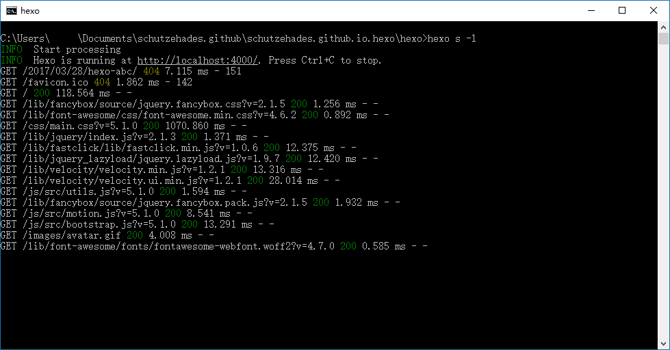
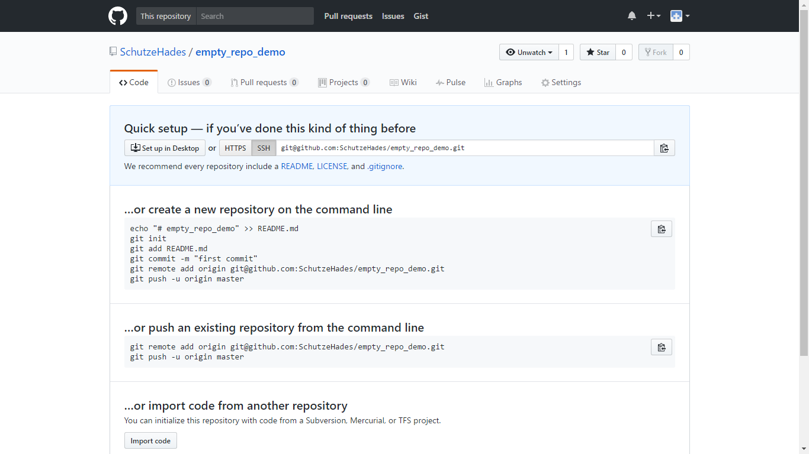

摘要
从零开始（嗯。。。这个零的定义好难呀。。。我假设你能通过计算机一级考试，了解GitHub常见术语、常用功能——的位置，了解Git的基本概念），搭建托管于GitHub，基于Hexo的博客。内容涉及Hexo的安装、初始化、生成、本地调试以及部署到GitHub全过程。鼓励阅读官方文档，本教程仅作为官方文档的归纳与补充。
背景
TL;DR
懒人我 - ⊙︿⊙ 搭一个博客听起来好像很麻烦的样子。
码农我 - o(︶︿︶)o 怕什么，作为一个靠开发网站吃饭的人，搞个个人网站还不是轻松加愉快。。。
懒人我 - ⊙﹏⊙ 等等，我好像得先买个域名；哦，还得买个服务器；最重要的是，自己写的界面好丑呀，是不是还要先学学CSS什么的，JS也就会皮毛呀怎么办。。。哎呀，好烦呀。。。不想写博客了呢。。。
码农我 - ╭(﹊∩∩﹊#)╮ 那你还是去用现成的博客系统吧。。。比如WordPress。。。
懒人我 - ◑﹏◐ 可是还是好麻烦的样子，买服务器域名这种要掏钱的事情我这么抠怎么会干。。。而且还要配应用、配数据库，以后万一火了还得考虑CDN和SEO，好麻烦呀。。。
码农我 - ╭∩╮(︶︿︶)╭∩╮ （就你这样子还想火，做你的春秋大梦去吧）诶。。。据说世界最大同性交友社区GitHub上有个叫GitHub Pages的玩意儿可以充当博客，这样服务器、域名的钱就省了吧。。。备案、CDN和SEO也不用你操心了，还自带https。。。而且还支持Git作版本控制，不仅可以在没网时本地编写、本地预览，最重要的是麻麻再也不用担心你删错文章无法恢复了呢。。。【你这么抠门劲还写什么博客。。。
懒人我 - ╭(′▽`)╯ 噫，听起来好像不错的样子，但是自己写HTML、CSS、JS还是好麻烦呀，我想专注于写作可以不？
码农我 - √(─皿─)√ （你这么懒怎么不去死）那你可以用静态页面生成工具（软件）呀，网页框架、页面样式就交给工具去生成吧，你写好文章，直接由工具生成静态页面总行了吧。。。你也就写写文字了。。。你一定是个假码农。。。
懒人我 - \(^o^)/ 这么棒，都有些啥静态页面生成工具呀？
码农我 - o(︶︿︶)o Hexo、Jekyll、Octopress、Hugo。。。
懒人我 - (ˉ﹃ˉ) 这么多好纠结。。。
码农我 - ╭(￣m￣*)╮ Hexo最简单，有简体中文文档，基于Node.js，原生支持Markdown，最重要的是能通过插件一键部署到GitHub上。。。
懒人我 - o(≧v≦)o~~ 憋说了，就它了！
码农我 - ㄟ(川.一ㄟ)
系统环境
Windows 10-64bit
步骤
安装Git
Hexo本身有很多东西是托管在GitHub上的，例如它自带的主题。关于Git安装请参见本博文章《Git ABC》中的“步骤”一节。
安装Node.js
Node.js之于Javascript大致类似于JVM之于Java（不严谨，仅供类比理解。事实上JVM执行的是字节码，而不是Java代码，但Node.js是直接执行的Javascript代码），Hexo便是基于Node.js搭建的。Node.js的安装最佳姿势本来应该是通过nvm（Node Version Manager），然而其官方并没有提供Windows版本的应用程序，于是就走下载安装包的路了。这条路没啥好说的，谷歌搜索关键字Node.js进入官网，点击Downloads进入下载页，点击Current选择合适的安装包进行下载；下载完后一路Next直到Finish就好。安装完成后执行以下命令以检验是否成功（以9.11.1版Node.js为例）：
1 | $ npm --version |
执行后输出以下信息（版本号可能会有变动）：
1 | 5.6.0 |
升级npm
作为一个有版本强迫症的人，不把自己的软件更新到最新版本实在是不能忍。Node.js的升级非常简单，直接执行上面“安装Node.js”一节，如果电脑上没有Node.js则会新安装一个，如果有的话就会更新到当前安装的版本。但是安装包里面带的npm不一定是最新版本，根据npm官方文档底部小字Orz，可以执行以下命令来更新：
1 | $ npm install npm@latest -g |
更新完成后执行以下命令以检验更新结果：
1 | $ npm --version |
执行后输出以下信息：
1 | 5.8.0 |
安装淘宝npm镜像
npm，我为什么不大写呢，因为它不是一个缩写呀。这里就有一个好玩的故事了（这个故事原来是在npm官方文档的FAQ栏目中记载的，然而我现在找不到了╮(╯▽╰)╭，TL;DR）：
Contrary to the belief of many, “npm” is not in fact an abbreviation for “Node Package Manager”. It is a recursive bacronymic abbreviation for “npm is not an acronym”. (If it was “ninaa”, then it would be an acronym, and thus incorrectly named.)
“NPM”, however, is an acronym (more precisely, a capitonym) for the National Association of Pastoral Musicians. You can learn more about them at National Association of Pastoral Musicians.
In software, “NPM” is a Non-Parametric Mapping utility written by Chris Rorden. You can analyze pictures of brains with it. Learn more about the (capitalized) NPM program athttp://www.cabiatl.com/mricro/npm/.
The first seed that eventually grew into this flower was a bash utility named “pm”, which was a shortened descendent of “pkgmakeinst”, a bash function that was used to install various different things on different platforms, most often using Yahoo’s yinst. If npmwas ever an acronym for anything, it was node pm or maybe new pm.
So, in all seriousness, the “npm” project is named after its command-line utility, which was organically selected to be easily typed by a right-handed programmer using a US QWERTY keyboard layout, ending with the right-ring-finger in a postition to type the -key for flags and other command-line arguments. That command-line utility is always lower-case, though it starts most sentences it is a part of.
简单来说就是，npm是“npm is not an acronym”这句话的递归缩写，但是其实呢，这句话递归缩写正常应该是“ninaa”，但是如果npm的名字改成ninaa了，那这个名字就变成一个缩写了，而这个名字不应该是一个缩写，所以这个名字就钦定了叫npm。觉得绕就跳过这段吧，手斜。
npm之于Javascript类似于Maven之于Java，其作用主要是管理Javascript软件包，其中当然也包括了Node.js的包，而Hexo是基于Node.js搭建的，所以也需要npm来管理它依赖的包。npm在安装Node.js的时候已经一同装上了，但是由于众所周知的原因，npm在中国大陆无法或很难完成网络连接，所以要想顺利、快速地下载Node.js的包，使用淘宝NPM镜像是个不错的选择。安装方法如下：
1 | $ npm install -g cnpm --registry=https://registry.npm.taobao.org |
安装后，在需要执行npm的地方 换用cnpm 即可使用淘宝NPM镜像。
安装Hexo
1 | $ cnpm install -g hexo-cli |
初始化Hexo工程
新建一个目录，然后搭建一个基础的Hexo博客源代码框架。
创建Hexo工作目录
新建一个 文件夹 名为schutzehades.github.io.hexo（这个名字随意，建议和GitHub上的repo同名，因为这个文件夹将被推送到GitHub上）。注意hexo初始化时会清空整个文件夹，所以初始化前不要往文件夹里面放任何东西，比如不要初始化Git目录，因为这会生成仓库文件夹.git。
初始化Hexo工作目录
按住键盘Shift键，同时在文件浏览器空白处点击鼠标右键，在弹出的菜单中选择在此处打开命令窗口(W)，键入以下命令（后文中讲述的Hexo命令均需在Hexo工程的根目录中执行）：
1 | $ hexo init |
初始化完成后，schutzehades.github.io.hexo文件夹的目录如下：
1 | schutzehades.github.io.hexo // Hexo工程根目录 |
安装Hexo依赖包
目录中的package.json文件中定义了Hexo依赖的所有软件包。用npm管理依赖包的好处就在于，有了package.json，在任何地方只需执行以下命令，便可自动完成所有依赖包的安装。对package.json文件感兴趣的可以参阅npm的官方文档：
1 | $ cnpm install |
升级Hexo
我的做法比较粗暴，直接用最新版的Hexo在另外一个临时目录执行hexo init，将新生成的package.json文件合并到旧版本的package.json中去。这个过程需要识别一下，哪些依赖是自己手动加的需要保留的，比如hexo-tag-plantuml、hexo-deployer-git之类的；哪些依赖是新版本的Hexo不需要应该删除的。然后删除掉node-modules文件夹，重新执行cnpm install便完成了升级。Node应该有更加科学的升级姿势，不过我不太清楚，这个过后研究研究。
生成静态网页文件
我们使用Hexo的最终目的是要生成静态网页文件，执行以下命令：
1 | $ hexo generate |
或者简写为：
1 | $ hexo g |
这个命令有两个参数：
| 选项 | 描述 | ||
|---|---|---|---|
| -d, –deploy | 文件生成后立即部署网站，等价于执行完hexo g后再执行一次hexo d，也等价于hexo d -g（详情） |
||
| -w, –watch | 监视文件变动 | ||
>在命令提示符中执行完hexo g -w后，不会立即退出，而是在输出以下提示后阻塞在那里： |
|||
|
|||
>这就表明Hexo正在监视文件变动，如果有文件内容发生更改，Hexo会自动重新生成静态网页文件，在生成时会比对文件的SHA1校验和，只有变动的文件才会写入。 |
hexo g命令执行完成后，会在Hexo根目录下生成一个名为public的文件夹，里面便是根据Hexo博客源代码生成的静态网页文件。
启动本地服务器
见证奇迹的时刻终于到了，执行以下命令以在本地启动一个服务器来预览我们的博客：
1 | $ hexo server |
或者简写为：
1 | $ hexo s |
默认情况下，访问网址为：http://localhost:4000/。
这个命令有四个参数：
| 选项 | 描述 | ||
|---|---|---|---|
| -i, –ip | 重设IP | ||
| -p, –port | 重设端口，比如当4000端口被占用时可使用别的端口号 |
||
| -s, –static | 静态模式 | ||
| -l, –log | 打印日志 | ||
| >- 关于重设IP，引述官方文档如下： | |||
|
|||
>- 关于静态模式，在此模式下，服务器只处理public文件夹内的文件，而不会处理文件变动。具体来讲，默认的hexo s命令在启动服务器后，如果博客文件再次发生改动，那么浏览器中的页面在刷新后立刻就会发生变化；而如果是通过hexo s -s命令启动服务器的话，除非用户执行hexo g在public文件夹中生成新的静态文件，否则浏览器中的页面不会有任何变化。静态模式适用于将Hexo服务器部署于生产环境的情景，这种模式下未经验证的对页面的改动不会立即呈现在用户面前；为了更加明确，可以做一个比较，hexo s命令直接启动服务器的效果等效于hexo g -w + hexo s -s，适合编辑博文的时候启一个本地服务，一边编辑并保存，一边在浏览器中刷新看最新的文章效果，如此便不用每次编辑完后都执行hexo -g命令了； |
|||
| > - 关于打印日志，开启这个选项后，Hexo会在命令提示符中输出详细的请求日志等，如下图所示： | |||
| >  |
最后再补充一点draft相关的信息。一般未编辑完成的文章我会放在draft中，而以hexo s启动的服务器是不会展示draft目录中文章的，这个时候就会用到--draft参数。官网的描述乍一看不太容易和hexo s联系起来，其实要想将draft目录中的文章也展示出来，只需要执行hexo s --draft即可。
新建GitHub仓库
这一步需要创建两个GitHub仓库：一个是GitHub Pages的repo（比如本博的schutzehades.github.io），一个是Hexo博客源代码的repo（比如本博的schutzehades.github.io.hexo）。前者用来存放Hexo生成的静态页面，后者用来存放Hexo的博客源代码文件。之所以将Hexo的博客源代码文件也托管到GitHub上，是因为我希望通过Git来对其进行版本管理，同时通过GitHub实现多端协作。如果没有这个需求，则无需建立Hexo博客源代码repo；如果只是介意公开Hexo博客源代码的话，可以选择私有Git仓库，GitHub有付费私有仓库，被Coding.net收购的GitCafe有免费的私有仓库。关于私有Git仓库请看这里；后者便是GitHub Pages的repo了，这个repo名的格式固定为username.github.io（其中username是你的GitHub用户名），GitHub会自动为这样格式的repo生成同名的GitHub Pages域名。
提交Hexo源代码到本地Git仓库
初始化Git仓库
打开Git Bash（关于使用Git Bash的方法和原因，本博文章《Git ABC》中的“Git Bash”一节有讲述），执行以下命令，在Hexo工程根目录初始化Git仓库（Git零基础的请参见本博文章《Git ABC》中的“Git命令入门#init”一节）：
1 | $ git init |
添加内容到下一次提交
执行以下命令，将Hexo工程根目录中的所有文件和文件夹添加到下一次提交中（Git零基础的请参见本博文章《Git ABC》中的“Git命令入门#add”一节）：
1 | $ git add * |
提交到本地Git仓库
执行以下命令，将Hexo工程提交到本地Git仓库（Git零基础的请参见本博文章《Git ABC》中的“Git命令入门#commit”一节）：
1 | $ git commit -m "init hexo" |
P.S. 如果之前从来没用过Git，这一步可能会提示填写用户名和邮箱。使用Git前的配置请阅读本博文章《Git ABC》中的“Git的最低配置”一节：
添加远程仓库
执行以下命令，将Hexo工程提交到本地Git仓库（Git零基础的请参见本博文章《Git ABC》中的“Git命令入门#remote”一节）：
1 | $ git remote add origin git@github.com:SchutzeHades/schutzehades.github.io.hexo.git |
其中git@github.com:SchutzeHades/schutzehades.github.io.hexo.git是我的GitHub远程仓库地址，将它替换成你自己的；origin是这个远程仓库的别名，你也可以自定义。
推送到远程仓库
执行以下命令，将Hexo工程推送到远程Git仓库（Git零基础的请参见本博文章《Git ABC》中的“Git命令入门#push”一节）：
1 | $ git push origin master |
注意，如果远程仓库不是新建的且在这次提交之前有过提交历史（包括在创建GitHub仓库时勾选了Initialize this repository with a README或Add .gitignore或Add a license也会生成一条commit），在执行这条命令时就会报以下错误：
1 | fatal: refusing to merge unrelated histories |
感兴趣的看这里。一个刚建好的无提交历史的新仓库首页应该长下图这样，GitHub会提示你如何向仓库里面提交内容：

部署静态网页到GitHub
说到静态网页的部署，就厉害了。Hexo自带GitHub部署插件，允许一键部署。你要做的就是往配置文件里面写入你的repo的地址、分支名，难以置信的简单有木有，你甚至都不用自己建本地仓库。
安装hexo-deployer-git
执行以下命令，通过npm下载Hexo部署到Git的插件：
1 | $ cnpm install hexo-deployer-git --save |
这条命令中--save的意思是，将这个插件添加到上文提到的package.json中去，以后如果再次执行cnpm install命令时，就会自动安装这个插件了。同时，因为这条命令更改了Hexo工程的源代码，所以需要再次提交代码到GitHub。
修改配置文件
打开上文中提到的_config.yml配置文件，找到下面这一节：
1 | # Deployment |
修改成这样：
1 | # Deployment |
考虑这样一个场景，因为GitHub在国内访问延迟较高，假设我们还有一个放在GitCafe上的repo。那么我们的deploy就可以这么写：
1 | # Deployment |
YAML依靠缩进来确定元素间的从属关系。因此，请确保每个deployer的缩进长度相同，并且使用空格缩进。
关于同一台电脑存放多个Git SSH帐号请参考本博客的《多个Git帐号自动切换》一文
部署到GitHub
完成了上面的准备步骤，终于可以部署静态网页到GitHub了。执行以下命令：
1 | hexo deploy |
或者简写为：
1 | $ hexo d |
这个命令有一个参数：
| 选项 | 描述 |
|---|---|
| -g, –generate | 部署之前预先生成静态文件，等价于先执行一次hexo g（详情） |
部署完成后，会在Hexo工程根目录下生成一个名为.deploy_git的文件夹，其内容和public文件夹类似，都是生成的静态网页文件。不同的是，它还有一个.git文件夹，不难理解，这个目录就是GitHub Pages对应的本地仓库了。推送到GitHub Pages repo的文件就出自于它了。 |
P.S. 当某些时候发现GitHub Pages和本地启动服务器看到网页内容不一致时，比如在新换了个主题之后就会出现这种情况，就可以通过删除
.deploy_git和public文件夹，然后重新生成并部署来解决。当然了，Hexo自己有hexo clean命令，但是这条命令只会清除缓存文件（db.json）和public文件夹，而不会清除.deploy_git文件夹。
P.P.S. 当你觉得GitHub Page工程中的提交记录太多，没必要保留，因为我们更关心的实际上是Hexo源代码工程的变更记录，也可以通过在部署前删除.deploy_git文件夹的方式，来实现。
收工
至此，一个Hexo Demo就已经构建完成并且将静态网页文件部署到了GitHub Pages上，你可以通过访问https://username.github.io（其中username是你的GitHub用户名）来看你的成果了！